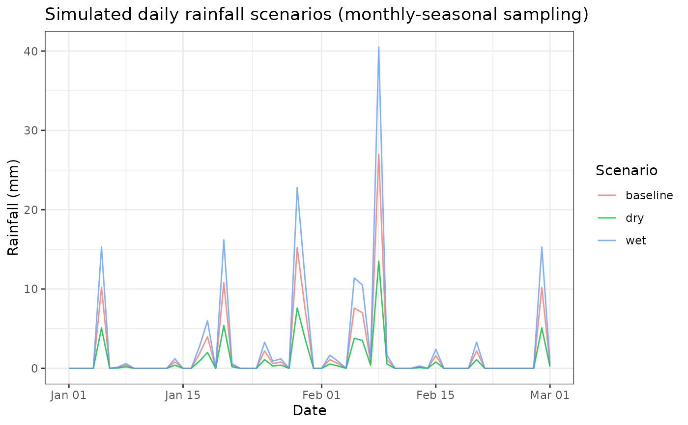

Simulate daily rainfall scenarios (monthly-seasonal sampling)
Source:R/simulate_rainfall_scenarios.R
simulate_rainfall_scenarios.RdSamples daily rainfall by drawing (with replacement) from the empirical distribution of the same calendar month across all years, then applies simple scenario transforms (baseline/dry/wet/erratic). This preserves monthly seasonality and zero proportions while allowing stochastic realisations.
Arguments
- df
A data frame containing at least a date column and rainfall. Works out-of-the-box with
weather_nl. If column names differ, they will be normalised vianormalize_weather_names().- times
Either:
a vector of
Dates to simulate for, oran integer vector of day offsets from an origin date (see
origin), orNULL(default): use the span ofdf$date.
- scenarios
Character vector of scenario names to generate. Built-ins:
"baseline","dry","wet","erratic".- scales
Named numeric multipliers for scenarios. Defaults:
list(dry = 0.5, wet = 1.5).- erratic_range
Numeric length-2 giving min/max random factor for
"erratic"scenario. Defaultc(0.1, 2.0).- origin
Date used when
timesare integers (day offsets). Default"2008-01-01".- plot
Logical; if
TRUE, include a ggplot comparing scenarios.
Value
A list with:
- series
Tibble with columns
date,month,scenario,rain_mm.- plot
ggplotobject ifplot = TRUE, otherwiseNULL.
Details
For each simulated day, the function identifies that day’s calendar month and
samples one value from the pool of observed daily rainfall for that month
across all years in df. Scenario transforms are applied afterwards:
baseline: identity
dry: multiply by
scales$drywet: multiply by
scales$weterratic: multiply by
runif(1, erratic_range[1], erratic_range[2])
Zeros in the empirical pool are naturally preserved by resampling.
Examples
data(weather_nl)
set.seed(1)
sim <- simulate_rainfall_scenarios(weather_nl,
times = as.Date("2010-01-01") + 0:59,
scenarios = c("baseline","dry","wet"),
plot = TRUE)
head(sim$series)
#> # A tibble: 6 × 4
#> date month scenario rain_mm
#> <date> <int> <chr> <dbl>
#> 1 2010-01-01 1 baseline 0
#> 2 2010-01-02 1 baseline 0
#> 3 2010-01-03 1 baseline 0
#> 4 2010-01-04 1 baseline 0
#> 5 2010-01-05 1 baseline 10.2
#> 6 2010-01-06 1 baseline 0
if (!is.null(sim$plot)) print(sim$plot)
